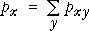
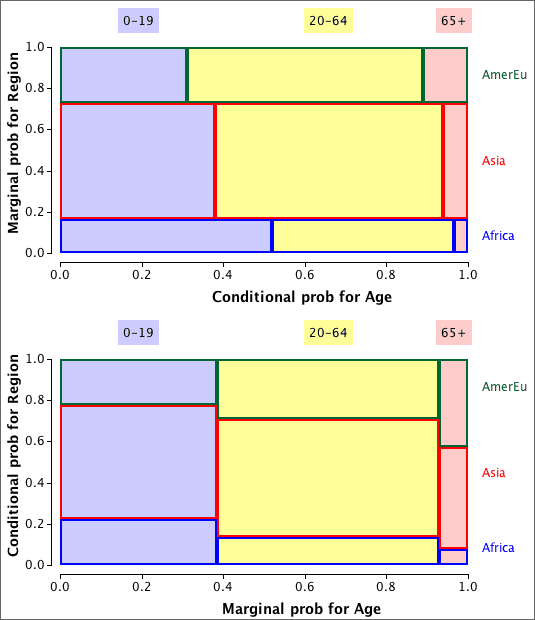
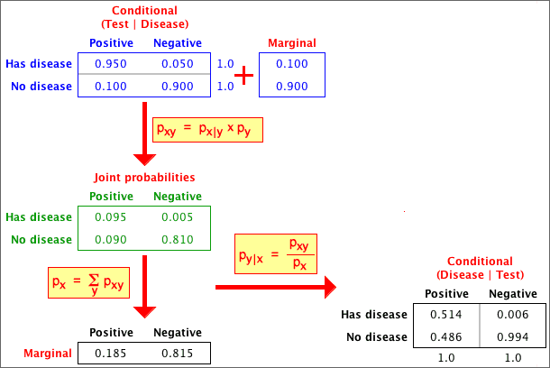

If you don't want to print now,
Data sets with two categorical variables
Bivariate categorical data sets are usually summarised with a contingency table.
For example, a study examined 62 patients who had been given a prescription medicine for some condition. Each patient was classified by whether they had complied with the treatment prescribed and by racial group:
| Race | Compliers | Non-compliers | Total |
|---|---|---|---|
| White | 13 | 10 | 23 |
| Non-white | 13 | 26 | 39 |
| Total | 26 | 36 | 62 |
Joint probabilities
Bivariate categorical data can be modelled as a random sample from an underlying population of pairs of categorical values. The population proportion for each pair (x, y) is denoted by pxy and is called the joint probability for (x, y).
In games of chance, we can often work out the joint probabilities. For example, if a gambler draws a card from a shuffled deck and also tosses a coin, there are eight possible combinations,
Probabilities for a single variable
A model for two categorical variables is characterised by the joint probabilities pxy.
The marginal probability, px, for a variable X is the proportion of (x, y) pairs in the population with X = x . This can be found by adding all joint probabilities for pairs with this x-value.

There is a similar formula for the marginal probabilities of the other variable,

Example
In the following example, the marginal probabilities for X are the row of totals under the table, and the marginal probabilities for Y are the column of totals on the right.
| Variable X | ||||
|---|---|---|---|---|
| Variable Y | X = A | X = B | X = C | Total |
| Y = 1 | 0.2576 | 0.1364 | 0.1212 | 0.5152 |
| Y = 2 | 0.0909 | 0.0758 | 0.0152 | 0.1818 |
| Y = 3 | 0.0455 | 0.0758 | 0.0606 | 0.1818 |
| Y = 4 | 0.0152 | 0.0303 | 0.0758 | 0.1212 |
| Total | 0.4091 | 0.3182 | 0.2727 | 1.0000 |
Probabilities in a sub-population
Conditional probabilities for Y, given X = x
The general definition of the conditional probabilities for Y given that the value of X is x is
They can be found by rescaling of that row of the table of joint probabilities (dividing by px) so that the row sums to 1.0.

Two sets of conditional probabilities
Conditional probabilities for X given that Y has the value y are defined in a similar way:

You should be careful to distinguish between px | y and py | x.
| The probability of being pregnant, given that a randomly selected person is female would be fairly small. The probability of being female, given that a person is pregnant is 1.0 !! |
Proportional Venn diagrams
A proportional Venn diagram is drawn from the marginal probabilities of one variable and the conditional probabilities for the other variable,

Rewriting the definition of conditional probabilities,

The area of any rectangle in the diagram therefore equals the joint probability of the categories it represents.
An alternative proportional Venn diagram can be drawn from the marginal probabilities of Y and the conditional probabilites of X given Y. The area for the rectangle corresponding to any (x, y) is its joint probability, pxy.
Example
The table below is based on the world population in 2002, categorised by region and by age group. It shows the joint probabilities for a randomly chosen person being in each age/region category.
| Age | |||
|---|---|---|---|
| 0-19 | 20-64 | 65+ | |
| Africa and Near East | 0.085 | 0.073 | 0.006 |
| Asia | 0.215 | 0.315 | 0.035 |
| America, Europe and Oceanea | 0.084 | 0.158 | 0.030 |
The two proportional Venn diagrams are shown below.

Bayes theorem
In particular, note that it is possible to obtain the conditional probabilities for X given Y, px | y, from the marginal probabilities of X, px, and the conditional probabilities for Y given X, py | x. This can be expressed in a single formula that is called Bayes Theorem, but it is easier in practice to do the calculations in two steps, obtaining the joint probabilities, pxy, in the first step. There are several important applications of Bayes Theorem.
Accuracy of medical diagnostic tests
There are two types of error in a test for a medical condition:
Consider a diagnostic test with
p negative | disease = 0.05 ppositive | no disease = 0.10
From these, we can also write
p positive | disease = 0.95 pnegative | no disease = 0.90
We will also assume that 10% of people who are given the test have the disease,
p disease = 0.10
From this information, we can find the probabilities of having the disease, given the result of the diagnostic test,

If we know that a child has normal weight, there is a higher probability of having above average athletic performance than an overweight child. Since the conditional probabilities for performance, given weight are different for different weight categories, the two variables are associated.
Independence
If the conditional probabilities for Y are the same for all values of X, then Y is said to be independent of X.
If X and Y are independent, knowing the value of X does not give us any information about the likely value for Y.
Example
An example of independence is given by the following table of joint probabilities for the weight category and mathematical ability of high school children.
| Mathematical performance | ||||
|---|---|---|---|---|
| Poor | Satisfactory | Above average | Marginal | |
| Underweight | 0.0225 | 0.1125 | 0.0150 | 0.1500 |
| Normal | 0.0825 | 0.4125 | 0.0550 | 0.5500 |
| Overweight | 0.0300 | 0.1500 | 0.0200 | 0.2000 |
| Obese | 0.0150 | 0.0750 | 0.0100 | 0.1000 |
| Marginal | 0.1500 | 0.7500 | 0.1000 | 1.0000 |
The proportional Venn diagram for this model is shown below.

The conditional probability of above average maths performance is the same for all weight categories — knowing a child's weight would not help you to predict maths performance. The two variables are therefore independent.
Mathematical definition of independence
If Y is independent of X, then:
Assessing independence from a sample
Independence is an important concept, but it is defined in terms of the joint population probabilites and in most practical situations these are unknown. We must assess independence from a sample of individuals — a contingency table.
Example
The contingency table below categorises a sample of 214 individuals by gender and some other characteristic (possibly weight group or grade in a test).
| Male | Female | Total | |
|---|---|---|---|
| A | 20 | 60 | 80 |
| B | 9 | 84 | 93 |
| C | 2 | 39 | 41 |
| Total | 31 | 183 | 214 |
Is this consistent with a model of independence of the characteristic and gender? (Are the probabilities of A, B and C grades the same for males and females?)
Estimated cell counts under independence
To assess independence, we first find the pattern of cell counts that is most consistent with independence in a contingency table with the observed marginal totals.
| Male | Female | Total | |
|---|---|---|---|
| A | ? | ? | 80 |
| B | ? | ? | 93 |
| C | ? | ? | 41 |
| Total | 31 | 183 | 214 |
The pattern that is most consistent with independence has the following estimated cell counts:

where n denotes the total for the whole table and nx and ny denote the marginal totals for row x and column y.
Applying this to our example gives the following table:
| Male | Female | Total | ||||||||||
|---|---|---|---|---|---|---|---|---|---|---|---|---|
| A |
Unfortunately this would be a bad test statistic — its distribution depends not only on the numbers of rows and columns in the table, but also on the number of individuals classified — the overall total for the table. A better test statistic is presented in the next page. 13.2.5 Chi-squared test statisticA better test statistic The following χ2 (pronounced chi-squared) statistic has much better properties than the raw sum of squares on the previous page
Its distribution only depends on the number of rows and columns in the contingency table. Distribution of chi-squared statistic When there is independence, the χ2 statistic for a contingency table with r rows and c columns has approximately a standard distribution called a chi-squared distribution with (r - 1)(c - 1) degrees of freedom. The mean of a chi-squared distribution equals its degrees of freedom and it is skew. Some examples are given below for contingency tables of different sizes:
P-value
The p-values is interpreted in the same way as for other hypothesis tests — it describes the strength of evidence against the null hypothesis:
Warning about low estimated cell counts The χ2 test statistic has only approximately a chi-squared distribution. The p-value found from it can be relied on if:
If the cell counts are small enought that these conditions do not hold, the p-value is less reliable. (But advanced statistical methods are required to do better!) 13.2.7 ExamplesExamples
13.2.8 Comparing groupsContingency tables and groups Contingency tables can either arise from bivariate categorical data or from univariate categorical data that is recorded separately from several groups. The chi-squared test assesses independence in bivariate data. The same test can also be used to compare the different groups if there is grouped data.
Example
| |||||||||||